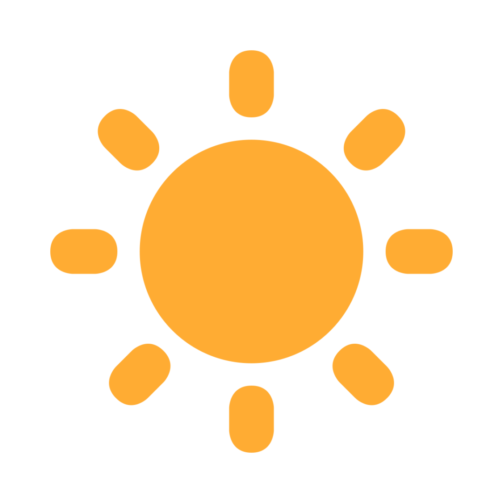

NOM NOM NAVIGATOR

 Nom Nom Navigator is a fullstack web app I made in grade 10. It combines AJAX with PHP and MYSQL to give users information on different restarants in Winnipeg and the food and services that they offer.
BLENDER


Blender is a 3D model creation software that people use to make animations, 3D visualizations, and still images. I first started using Blender in September, 2022 where it was a required subject in my classes. Over time, I've come to appreciate the application and its uses. I've made a few projects in Blender trying to learn more about it. I hope to continue my journey with Blender in the future and learn more about the software. While learning Blender I've made many projects which are showcased to the left. I recreated the Humboldt forum in Berlin in a project that took 10 hours to complete. It showcases the full exterior with every window, door, and detailing. The isometric kitchen was an experiment in lighting and warm colours. The table was one of my original works and I had to design, create, and colour the model. I wanteed to learn more about character modeling so I created an owl. It taught me about blocking and planning a sculpture before modeling.
NAAWI OODENA

In my time as a PTEC student, I learnt how to properly desgin and create websites. In the class I learnt HTML, CSS, Flexbox, and a little bit of JavaScript. I learnt more about the layout of website, typography, accessibility, and web standards. The class taught me about web design and proper time management while improving my public speaking abilities. The pictures are snapshots of my previous websites. I had to learn about treaties and Naawi Oodena - a landmark project for First Nations in Manitoba. I created a website showcasing Naawi Oodena and all its future ameninities in a accessible and informational website.
C# SCROLLER GAME
In 2022, PTEC students had to learn game development in Unity. I learnt C#, Python and Javascript while creating games using Unity's engine. I learnt how to script character movement and design game levels. I learnt how to make title and ending screens, implement sound into games and work collaboratively with my classmates to create a product. The video is showing my final project in the class where I made a platformer/fighting game with animated character movements, a health bar, game progession, damage inducing obstacles, and an enemy with scripted movement and attack patterns.